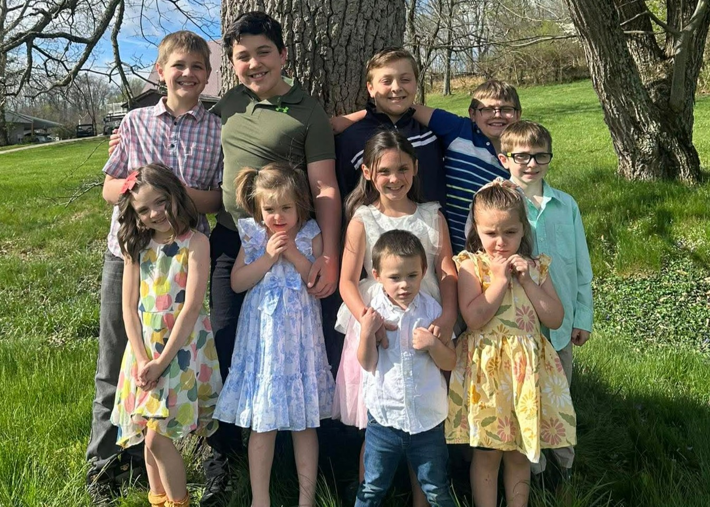
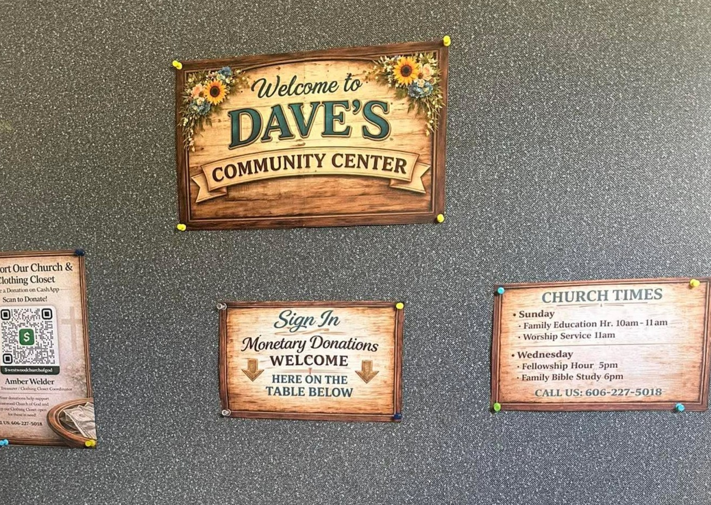
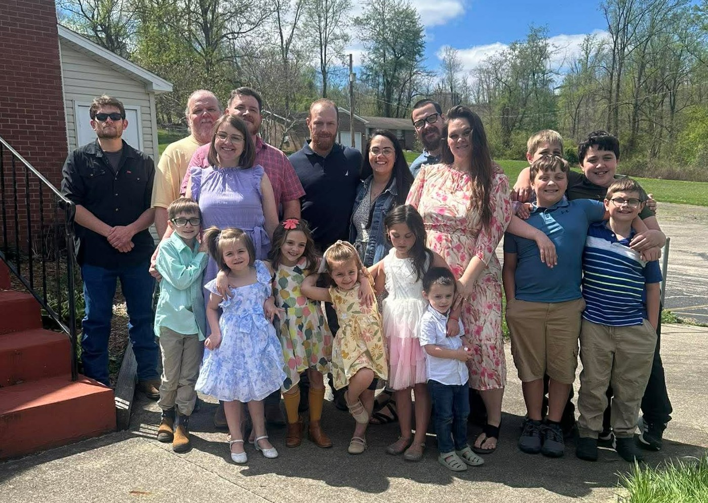
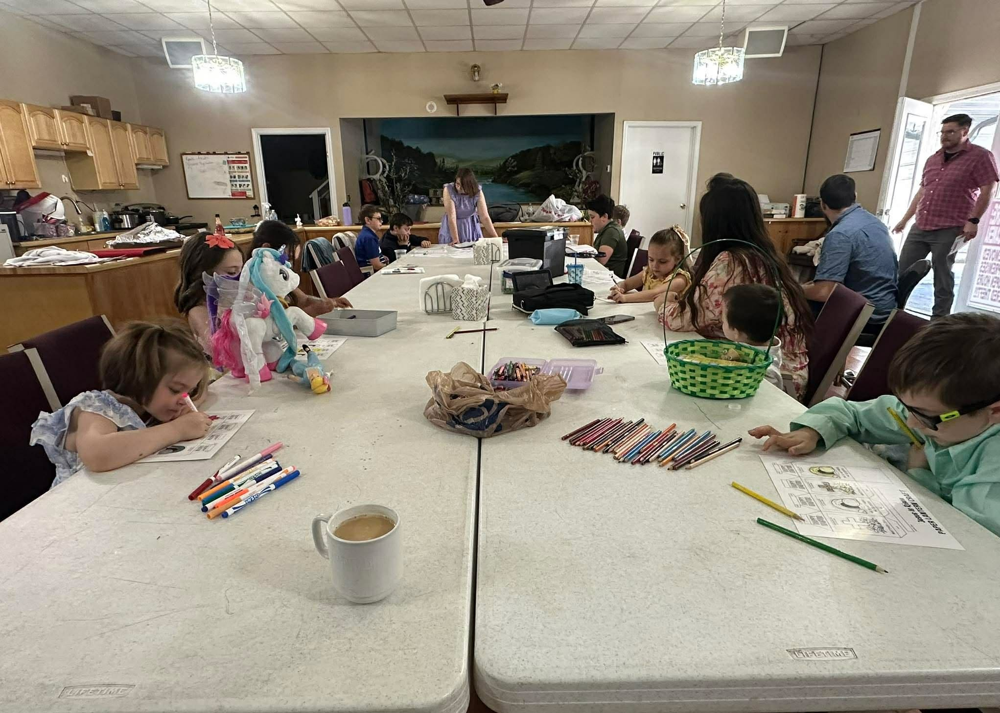
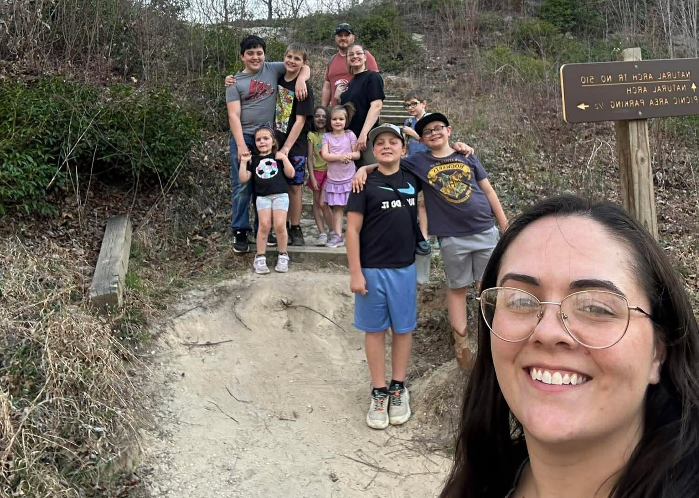
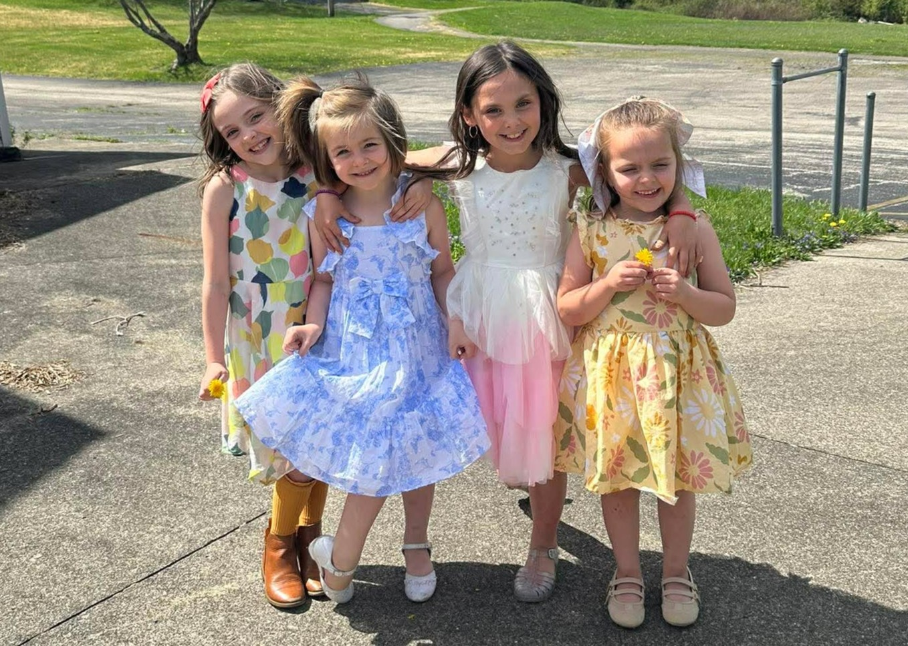
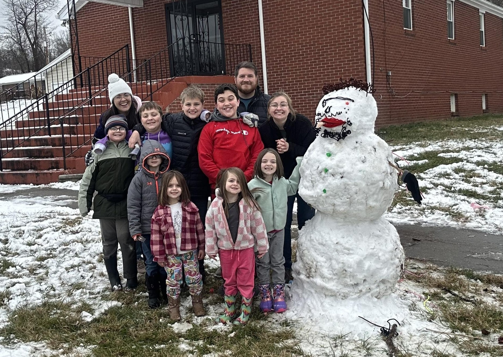
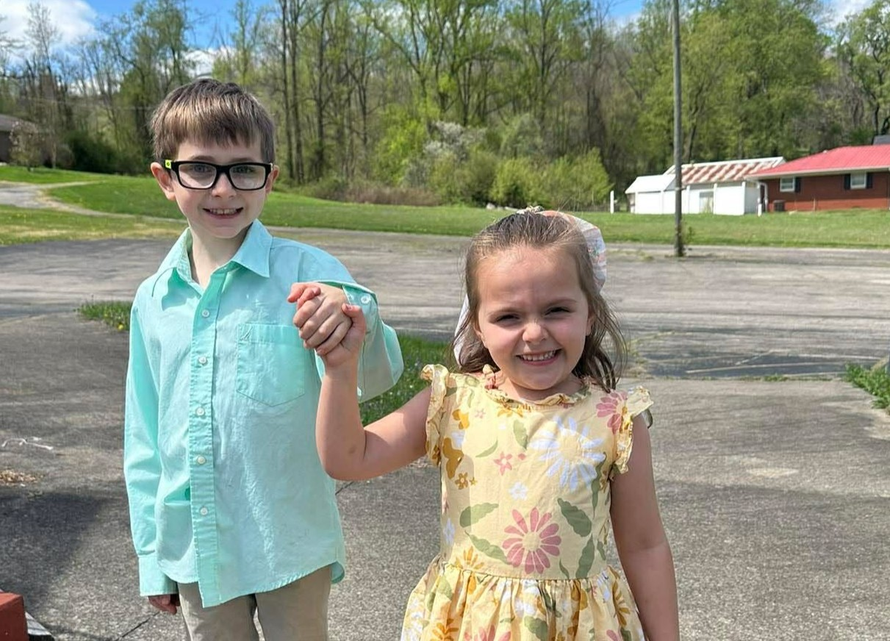
We believe that God, the creator of all things in the universe, is one God in three distinct persons. The Father, the Son, and the Holy Spirit, collectively referred to as the Trinity. Unified in mind and attributes, but distinct in personhood and role within the divine and eternal realm. God exists and has always existed, He is fully unrestricted by time, space, and matter. He is Holy, Just, and Righteous and is the standard for all morality.
The Father, the first person of the Trinity, is the head and mind for all purpose and will for His creation. He is the divine author of creation, holy covenants, and salvation for those who believe upon the gospel of Jesus Christ. He is the person seated on the throne of God that overlooks His creation and where He rules with complete sovereignty and Holiness. The Father is the grand architect and designer of all intricacies and wonders of all things seen and unseen. He is the divine authority for all and nothing happens outside of His Will and Purpose that happens (Matthew 10:29-30, Lamentations 3:37-39).
The Son, Jesus Christ, Immanuel, the Messiah is the eternal Son of the Father and second person of the Trinity. He gives personhood to the Word of God, and all things created came into being through Him (John 1). As eternal and uncreated and complete equality with the Father and the Spirit, the Son emptied Himself of His divine status and entered into the world as Man. However, unlike mankind, He was not corrupted or corruptible by sin, and His sinless life became the saving work of sacrifice needed to atone for unrighteous sinners. He willfully submitted to the will of the Father, and went to a cross and suffered the punishment for sins which is the Holy and Just Wrath of God, which was finished when He gave up His spirit and His flesh died. However, as master over all things, including death, He rose as the firstborn from the dead, three days later, and after forty days upon the earth, revealing Himself as the risen Messiah, He ascended into Heaven to be seated at the right hand of the Father to intercede for believers and to prepare a place for them until He will return to gather all those who believe unto Him forever.
The Spirit of God, the Helper, the Advocate is the third person of the Trinity, again in and from complete communion in eternity with the Father and the Son, the Spirit of God is the primary agent for conviction of sins for believers. In the beginning, the Spirit hovered over the face of the waters (Gen 1:2) and was present. He is the helper that Christ promised to the disciples that would come and teach believers the knowledge of God (John 16:5-15) as the one who would enable them to walk in the righteousness of God by first enabling them to believe (1 Corinthians 12:3). He intercedes for us with “groanings too deep for words” when we do not know how to pray according to the will of God (Romans 8:26-27).
We believe the gospel (good news) of Jesus Christ is the means to which a person is saved from the eternal punishment of sin which is God’s divine and just wrath. We must acknowledge that as human beings we are woefully sinful in nature and are without any merit or goodness to earn us in a right standing before a Holy and Righteous God. As humans, none of us are “good enough” as we are naturally inclined to want and fulfil our own wills and desires. There is none righteous, not even one (Romans 3:10). As such we are in need of a salvation acted out solely by the work of God. As such, God so loved the world, He sent His only begotten Son that whoever believes in Him will not perish but have eternal life. It is all of Him and none of us. (John 3:16) It is by believing in Jesus Christ as the Son of God that is God Himself in the flesh; that He lived a holy and righteous life; He died on the cross, receiving the penalty for sins, and was raised again on the third day, defeating death and justifying believers before God. He is now seated at the right hand of the Father, interceding for believers, declaring us justified by the work and blood of Christ and is returning soon for His Church.
As the Father is the eternal architect, He is active in the ordination of His saving plan by
sending His only Son that those who believe in Him shall have eternal life (John 3:16)
and grace (unmerited favor) by drawing those who hear the gospel to saving faith (John
6:44).
The Son provided the means of the imputation of righteousness by the sinless life that
He lived in the flesh. By His sacrifice on the cross and receiving the wrath for those who
would believe on Him, His righteousness could be placed upon the sinner who believes.
And by Him we are Justified before the Father.
The Spirit is our gracious helper doing the will of the Father by first enabling us to faith
(1 Corinthians 12:3) and then sealing us for the day of redemption (Ephesians 4:30),
keeping true converted believers until the day that we will be glorified.
We believe that the Bible, comprised of 66 books made up of both the Old and New Testaments is the inspired word of God. Written with human hands, and completely and divinely inspired by the Holy Spirit, contains all that believers need in order to learn about God and be sanctified slaves of Christ. “All Scripture is God-breathed and profitable for teaching, for reproof, for correction, for training in righteousness, so that the man of God may be equipped, having been thoroughly equipped for every good work.” (2 Timothy 3:16,17) We hold that it is the responsibility of all believers to be rooted in the Word and that it should be the primary source of one’s theology and knowledge of God.
We believe the Church is the global congregation of all true believing Christians. While the Church, globally, are the Children of God, we believe that Christians should participate in a local congregation to worship and fellowship alongside other believers. “And let us consider how to stimulate one another to love and good deeds, not forsaking our own assembling together, as is the habit of some, but encouraging one another, and all the more as you see the day drawing near.” (Hebrews 10:24, 25) As our Lord commanded us we are to love God and love our neighbor. “And when one of the scribes came and heard them arguing, he recognized that He had answered them well and asked Him, “What commandment is the foremost of all?” Jesus answered, “The foremost is, ‘Hear, O Israel! The Lord our God is one Lord; and you shall love the Lord your God with all your heart, and with all your soul, and with all your mind, and with all your strength.’ The second is this, ‘You shall love your neighbor as yourself.’ There is no other commandment greater than these.” (Mark 12:28-31)
Glory to God. It is our mission to equip and edify disciples for Christ’s Church. We
strongly believe in the need of frequent and consistent fellowship. It is our hope that you
will find in our church a place that you can rest from the world and be surrounded by
brothers and sisters in Christ to worship and to learn from God’s Word.
We are an independent church, having no ties or obligations to any particular
denomination. Our goal is to be rooted in God’s Word, faithfully examining and
expositing the Scriptures, and bearing one another’s burdens (Galatians 6:2). We
believe that this is practical and accomplishable without the oversight of a larger
governing body; but governed by the local congregation itself. We are led spiritually, by
Elders as undershepherds of Christ, and administratively by a Board of Trustees.
We desire to serve our community in practical ways that reflect the love of Christ. One of the ways we do that is through Dave’s Community Center.
Dave’s Community Center is our free clothing closet ministry, created to serve individuals and families in our community with care, dignity, and compassion.
Everything is free — no cost, no pressure, just love in action!
Hours and Location:
Located next door to the church and across the street from Fairview Elementary.
249 McKnight St.
Ashland KY, 41102
We build our lives and our church on the firm foundation of Jesus Christ.
Our faith is lived through service, generosity, and compassion.
We grow through worship, prayer, study, and authentic Christian community.
Every Sunday · 10:00 AM
Every Sunday · 11:00 AM
Every Wednesday · 5:00 PM
Every Wednesday · 6:00 PM
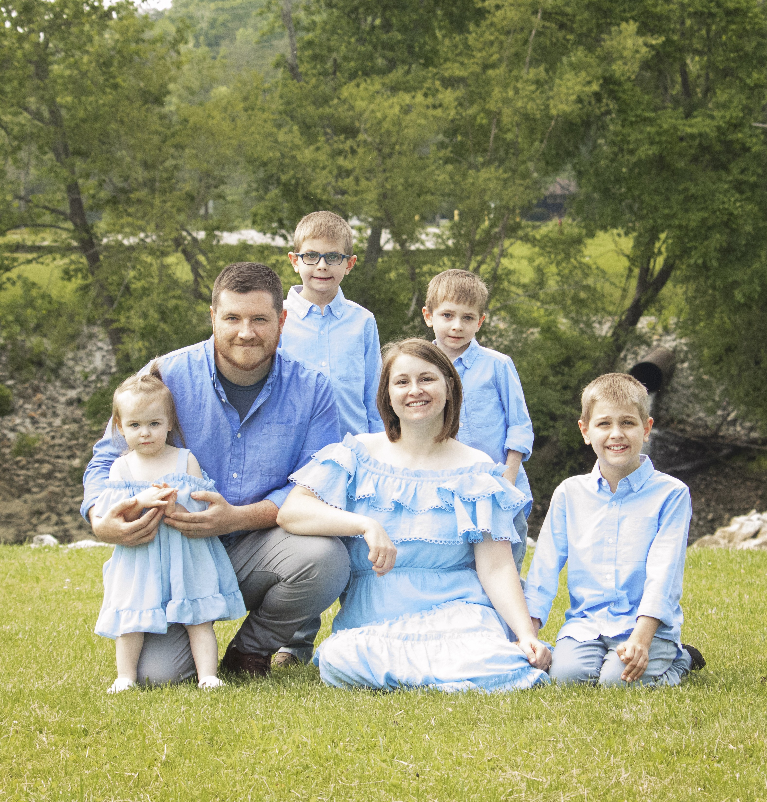
Elder-Pastor & Education Coordinator
Wade and Kellie Kidd joined Westwood Cornerstone Church with their family in April 2025 and have been deeply committed to serving the church ever since. Wade began serving as interim Pastor in September 2025 and was appointed Elder-Pastor in December 2025. Since 2015, he has served in ministry through youth work and counseling, and he is currently pursuing certification through the Association of Certified Biblical Counselors (ACBC) to continue growing in biblical counseling and pastoral care.
Kellie serves as Education Coordinator and Secretary and has faithfully served in youth and women’s ministry for over a decade. She is a devoted biblical educator and tutor within a Christian classical education community, and she has taken on many roles within the church with a heart for helping others grow in truth and faith.
Together, Wade and Kellie are grateful to serve the Lord side by side. They have been married since 2011 and are blessed with four children: Kelton, Keahn, Titus, and Ehvie.
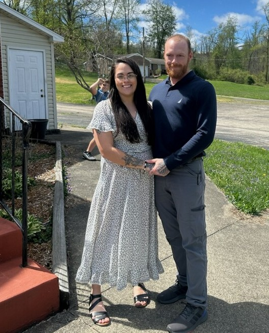
Amber Welder, Outreach Coordinator
Amber and her family joined Westwood Cornerstone Church in 2023 and have been a blessing to the church ever since. She has faithfully served in a variety of roles, including as Church Treasurer, helping manage the church’s finances with care and diligence. Amber now serves as our Outreach Coordinator, where she oversees and leads the day-to-day ministry of Dave’s Community Center (formerly known as the Clothing Closet). She has a heart for serving others and helping meet the needs of our community. Amber has been married to her husband Kyle since 2019, and together they are raising their four children—Logan, Levi, Alivia, and Aalyiah.
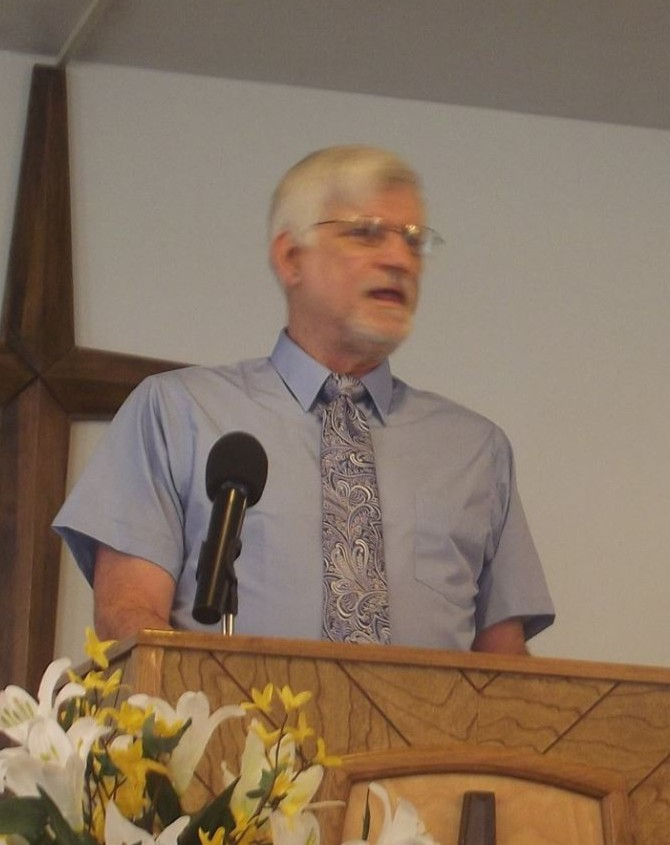
David Layne, Elder
Dave is our longest-serving member and has been part of Westwood Cornerstone Church from the very beginning. He has faithfully served in many roles over the years, including Pastor, and has poured his life into this church and its people. Today, Dave serves as our Senior Elder, offering wisdom, guidance, and steady leadership to both the congregation and church leadership. Because of his deep roots and lasting impact, we felt it was only right to name our community center in his honor.
Each one must do just as he has purposed in his heart, not grudgingly or under compulsion, for God loves a cheerful giver.
- 2nd Corinthians 9:7
Email:
office@cornerstonechurch.org
Phone:
(606) 227-5018
Address:
349 McKnight St.
Ashland, KY 41102
Westwood, USA